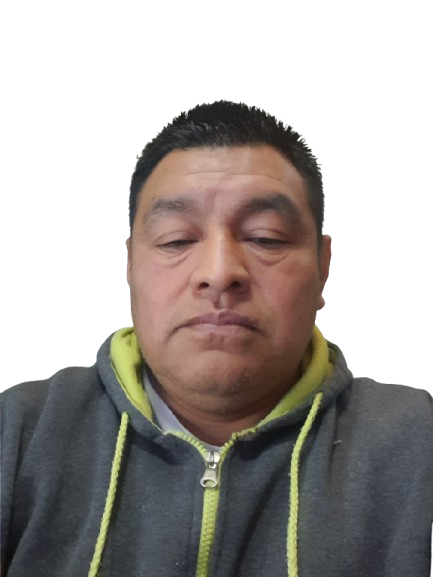

Tel: (502) 4957-7970
Email: luissurec74@gmail.com
Ubicación: Ciudad, Guatemala

Contador General con más de 15 años de experiencia en gestión financiera. Actualmente en transición al desarrollo web, especializándome en **React, Node.js y MySQL** para crear soluciones administrativas eficientes.
Contador General | Marzo 2011 – Actualidad
Auxiliar de Cartera | Abril 2005 – Diciembre 2007